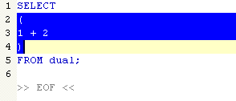

Find the matching character in the current document (for example, right
matching parenthesis) and select all columns and lines from the first to the
second matching brace. The character for which you want to find match and
select should be selected, or located at the cursor position.

Note that matching characters are defined in SQLTools languages.dat file.